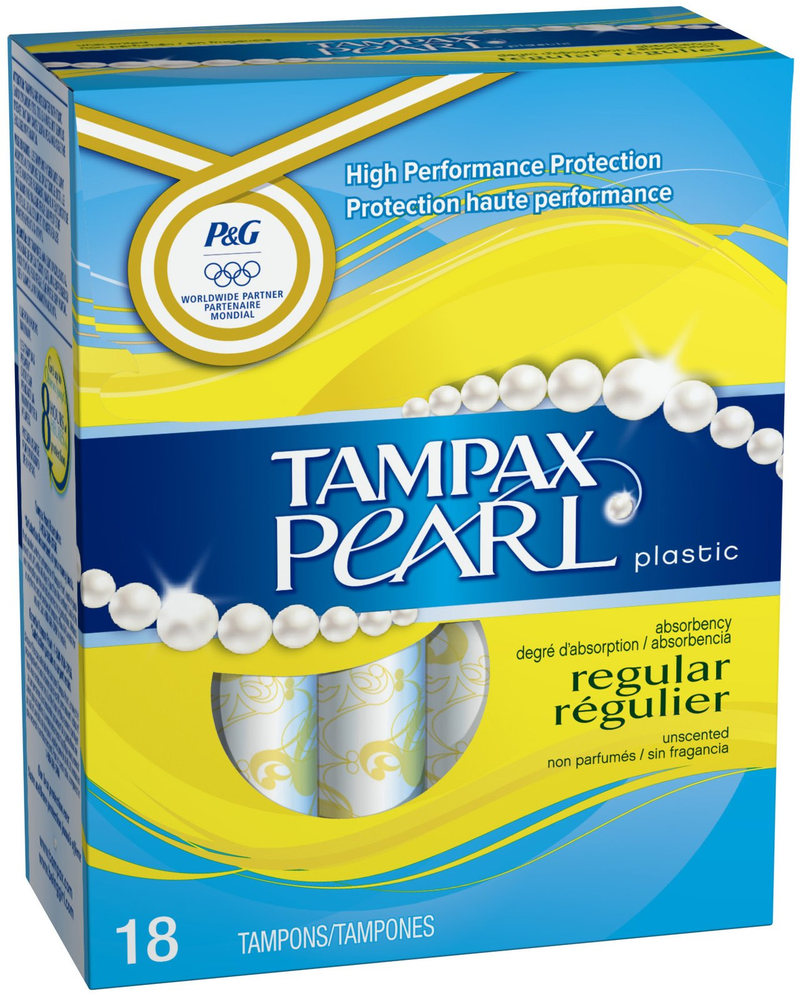
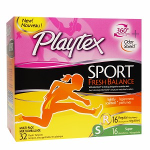
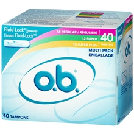
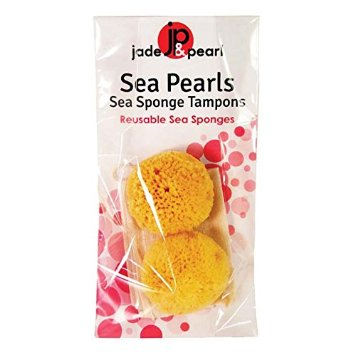
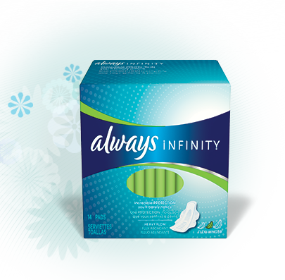
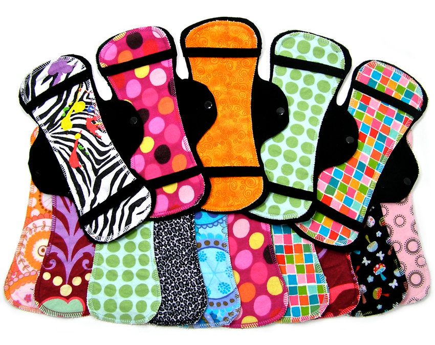
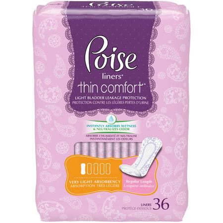

Products:
Tampons
Tampons are soft cotton "plugs" inserted in your vagina to absorb your menstrual flow before it leaves the body. Yes, it may feel a little uncomfortable if you insert it incorrectly, (not to worry- you'll get it right quickly!) and no- tampons will not make you lose your virginity.
Although tampons may take a while to get used to, the process is so worth it. Let's be real- you love swimming in lakes, and pads just don't cut it. Plus, they feel like giant diapers and worrying whether they can be seen through your LuluLemons is unnecessary paranoia no one has time for.
Not to worry- tampons are here to help! These products can be sold at your local pharmacy or grocery store in all different sizes and absorbencies to match your needs. They come in cute packaging and colors so that you'll start looking forward to your next period. (Okay, we're exaggerating. But really. Tampons are great!) The best part is that you won't even feel an overwhelming rush every time you stand up because the cotton absorbs your blood before it exits your vagina. You can continue with your daily activities as if Aunt Flow isn't there- and yes, that includes swimming!
Okay, enough raving about tampons. Here are some mini-reviews on great products that you can check out! --------GROUP REVIEWS---------
If you have any questions about tampons, check out our common misconceptions

Pro:
Smooth, pearl-like applicator make this product easy for first time users
Available in many different absorbencies
Built in Backup Braid helps prevent leaks
Con:
More expensive than cardboard applicator tampons

Pro:
Smooth Applicator
Conforms to your body shape when you exercise
"Umbrella"-like bottom prevents leaking
Con:
Larger in size, harder for first time users

Pro:
Small and compact, easy to store in your purse
No wasted plastic applicator, more
environmentally friendly
Cheap yet comfortable
Con:
Known for less absorbency than Tampax tampons
No applicator makes for harder insertion

Pro:
Environmentally friendly
Highly absorbent, can be worn longer than most tampons
Carries no risk of Toxic Shock Syndrome and does not throw body PH levels off track as tampons do
Can be used during intercourse
Con:
Relatively difficult insertion and removal- you need to get the sponge all the way up to your cervix!
Not recommended for everyone- some users experience discomfort during bowel movement
Pads
Although a more "old-fashioned" way to deal with periods, pads have come a long way from the ancient Chinese method of stuffing sand into a handkerchief to store up blood (True story!) Today's pads are comfortable, easy to use, and reliable. They are fast, safe (no risk of TSS) and easy to use and change- unlike tampons, you won't get blood on your hands and if you're hemophobic, you can change pads without looking.
In short, pads are rectangular cotton material that you stick to your underwear to soak up your blood after blood leaves your vagina. Many modern day pads have additional "wings" on the side, extra material that you fold over the sides of your underwear to further prevent leaking. Similar to tampons, they come in all absorbencies and sizes (lengths) that you can find at your local pharmacy or grocery stores. Not to worry- many pads today are papery thin (you can barely tell they're there) yet extremely absorbent and reliable.

Pros:
Extremely thin- absorbs 4x its weight! (Wowow technology) You can barely tell it’s there.
The pad makes exceptional use of its two foam layers- blood is quickly transferred to the bottom layer where it is stored. This way, the top layer remains dry and fresh so you don’t get that icky I’m-sitting-on-my-own-blood feeling.
Foam is extremely soft
Con:
On the more expensive side, as far as pads go.

Pro:
Added length for better overnight protection
Immediate sense of loving safety
Wings for extra support
Cons:
Fairly thick pad; noticeable when you wake up
No guarantee of complete protection if you have very heavy flow (but then again, nothing can guarantee complete protection)

Pro:
Environmentally friendly
Cute designs
Comfortable and easy to use
Economic choice in the long run
Con:
Needs to be washed after each use- relatively high maintenance
Does not provide immediate absorption like one-time use pads
PantyLiners
You can think of panty liners as mini pads used when pads are considered too "excessive".Panty-liners generally replace pads near the end of your period, when you want a layer beneath tampon as added protection against leaking, or just when you have slight vaginal discharge (don't worry, this is normal!) They look like pads but are thinner and narrower in construction.
